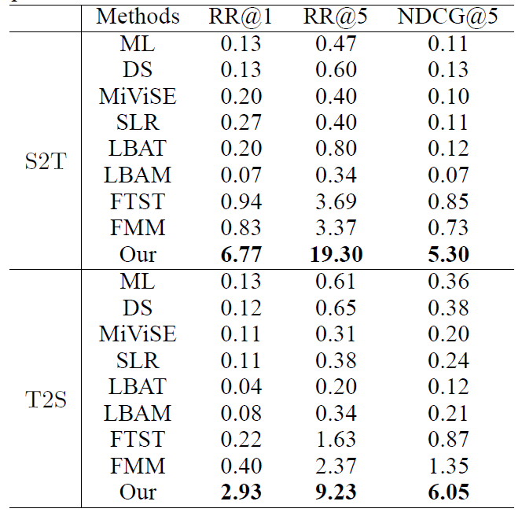

Y^2Seq2Seq: Cross-Modal Representation Learning for 3D Shape and Text by Joint Reconstruction and Prediction of View and Word Sequences
School of Software, Tsinghua University, Beijing, China
{kind=link}
Figure 1: The framework of Y^2Seq2Seq.
Jointly learning representations of 3D shapes and text is crucial to support tasks such as cross-modal retrieval or shape captioning. A recent method employs 3D voxels to represent 3D shapes, but this limits the approach to low resolutions due to the computational cost caused by the cubic complexity of 3D voxels. Hence the method suffers from a lack of detailed geometry. To resolve this issue, we propose Y2Seq2Seq, a view-based model, to learn cross-modal representations by joint reconstruction and prediction of view and word sequences. Specifically, the network architecture of Y2Seq2Seq bridges the semantic meaning embedded in the two modalities by two coupled “Y” like sequence-to-sequence (Seq2Seq) structures. In addition, our novel hierarchical constraints further increase the discriminability of the cross-modal representations by employing more detailed discriminative information. Experimental results on cross-modal retrieval and 3D shape captioning show that Y2Seq2Seq outperforms the state-of-the-art methods.
{kind=link}
Figure 2: Primitives cross-modal retrieval result.
{kind=link}
Figure 3: ShapeNet cross-modal retrieval result.
Zhizhong Han, Mingyang Shang, Xiyang Wang, Yu-Shen Liu, Matthias Zwicker. Y^2Seq2Seq: Cross-Modal Representation Learning for 3D Shape and Text by Joint Reconstruction and Prediction of View and Word Sequences. AAAI, 2019.
Zhizhong Han, Email address: h312h@mail.nwpu.edu.cn.
Mingyang Shang, Email address: smy16@mails.tsinghua.edu.cn.